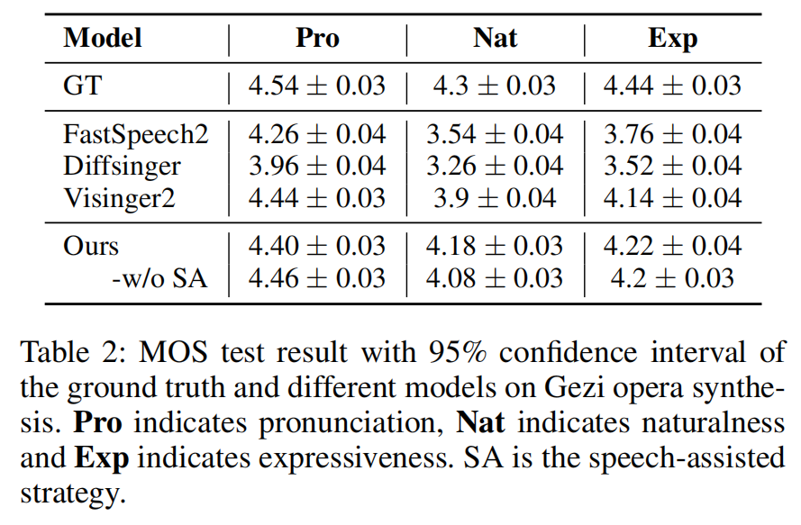
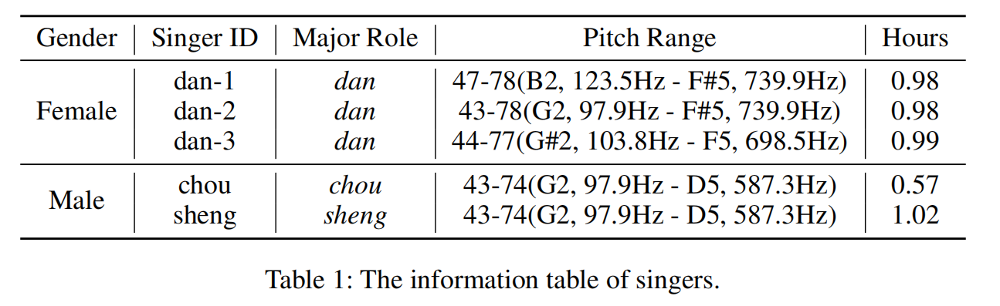

HiFiSinger: Towards High-Fidelity Neural Singing Voice Synthesis
Authors
- Meizhen Zheng (Xiamen University) midon@stu.xmu.edu.cn
- Xiaodong Shi* (Xiamen University) mandel@xmu.edu.cn
- Peng Bai (Xiamen University) baipeng@stu.xmu.edu.cn
Abstract
Chinese opera is an important component of traditional Chinese culture and one of the most popular stage arts among the Chinese people. Research for automatic opera voice synthesis(OVS) has high artistic and commercial value. However, compared to sufficient research on the similar singing voice synthesis(SVS) task, there is little research on opera voice synthesis. In this situation, we build a precisely labeled audio-text alignment dataset of Gezi opera, one of the Chinese operas, and train an acoustic model for Gezi opera synthesis based on this dataset. We analyze the differences between Chinese opera and popular music for which we formulate specific data annotation strategies and adapt the acoustic model architecture. In addition, we find the similarity between Hokkien speech and Gezi opera and propose a speech-assisted training strategy to improve our model's performance. The experimental results show that our model outperforms the SOTA model in the SVS task on the Gezi opera generation task. The extended experiment further verifies that our model has good performance on generation tasks of other operas such as the Peking opera.
Contents
Audio Samples1.1 Audio Quality
Extended Studies
2.1 Speech-assisted training
2.2 Peking synthesis
Dataset Info
Audio Samples
Audio Quality
我怎忍心割舍啊
| Recording | Diffsinger | Fastspeech2 | Visinger2 | Ours |
|---|---|---|---|---|
看来此冤今生难得报
| Recording | Diffsinger | Fastspeech2 | Visinger2 | Ours |
|---|---|---|---|---|
好比万箭穿呃我心呐
| Recording | Diffsinger | Fastspeech2 | Visinger2 | Ours |
|---|---|---|---|---|
笙歌同调琴瑟同音
| Recording | Diffsinger | Fastspeech2 | Visinger2 | Ours |
|---|---|---|---|---|
你本是大宋栋梁臣
| Recording | Diffsinger | Fastspeech2 | Visinger2 | Ours |
|---|---|---|---|---|
Extended Studies
Speech-assisted training
二次战鼓已催过
| w/ speech-assisted | w/o speech-assisted |
|---|---|
看来此冤今生难得报
| w/ speech-assisted | w/o speech-assisted |
|---|---|
你本是杨家传宗将
| w/ speech-assisted | w/o speech-assisted |
|---|---|
Peking synthesis
我本是一穷儒啊
| Recoding | Diffsinger | Fastspeech2 | DurIAN | ours |
|---|---|---|---|---|
冒犯了老太师府门庭
| Recoding | Diffsinger | Fastspeech2 | DurIAN | ours |
|---|---|---|---|---|
念卑人结发糟糠
| Recoding | Diffsinger | Fastspeech2 | DurIAN | ours |
|---|---|---|---|---|
Dataset Info

Related Works
FastSpeech 2: Fast and High-Quality End-to-End Text to Speech
DiffSinger: Singing Voice Synthesis via Shallow Diffusion Mechanism
VISinger 2: High-Fidelity End-to-End Singing Voice Synthesis Enhanced by Digital Signal Processing Synthesizer
Peking Opera Synthesis via Duration Informed Attention Network